Link to webpage:cs184.eecs.berkeley.edu/sp25
Link to GitHub repository: cs184.eecs.berkeley.edu/sp25
In this assignment, I implemented a physically-based renderer using path tracing. The project involved building a full rendering pipeline starting from ray generation and primitive intersection (triangles and spheres). To handle complex scenes efficiently, I implemented a Bounding Volume Hierarchy (BVH). I then progressed to simulating light transport, including direct illumination (hemisphere and importance sampling) and indirect illumination through recursive path tracing with Russian Roulette for unbiased termination. Finally, I implemented adaptive sampling to optimize rendering speed by concentrating samples on noisy regions.
The rendering pipeline begins by generating rays for each pixel in the image. For a given normalized image coordinate \((x, y)\), we first transform it into a point on the virtual sensor plane in camera space. Since the sensor is positioned at \(z = -1\), we calculate the camera-space coordinates using the horizontal and vertical field of view (HFOV and VFOV):
The ray direction in camera space is defined as the vector from the origin \((0,0,0)\) to the point \((x_{cam}, y_{cam}, -1)\). We then transform this direction vector into world space by multiplying it with the camera-to-world rotation matrix (c2w) and normalizing the result. The ray's origin is simply the camera's world position. Finally, we initialize the ray's min_t and max_t with the near and far clipping planes (nClip and fClip).
For the intersection part of the pipeline, each generated ray is tested against primitives in the scene (triangles and spheres). If an intersection occurs within the valid \(t\) range, we update the ray's max_t to the current intersection distance. This ensures that we only care about the closest hit point, effectively handling occlusion.
I implemented the Möller-Trumbore algorithm for ray-triangle intersection. This algorithm is highly efficient because it solves for the intersection point using barycentric coordinates without needing to pre-calculate the plane equation of the triangle.
The algorithm solves the following system of linear equations using Cramer's Rule: \[ \mathbf{O} + t\mathbf{D} = (1 - u - v)\mathbf{P_1} + u\mathbf{P_2} + v\mathbf{P_3} \] where \(\mathbf{O}\) is the ray origin, \(\mathbf{D}\) is the ray direction, and \(u, v\) are the barycentric coordinates. After computing \(t, u,\) and \(v\), we verify if the intersection is valid by checking:
min_t and max_t.
If these conditions are met, we update the Intersection structure with the hit time, the surface normal (interpolated using barycentric coordinates), and the primitive's BSDF.
Below are the results of rendering several .dae files with normal shading. These images confirm that the ray generation and intersection logic for both triangles and spheres are functioning correctly.
|
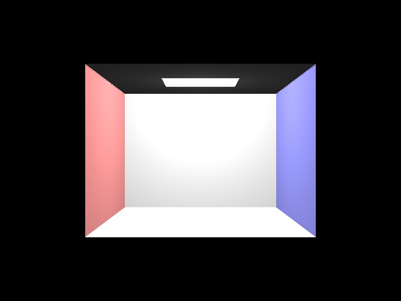 |
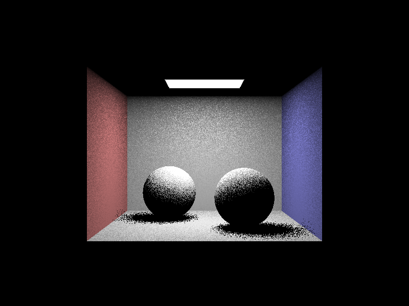 |
|
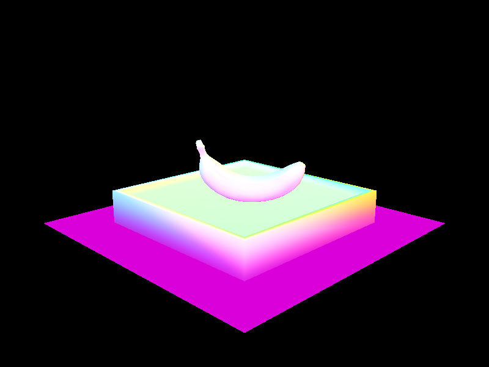 |
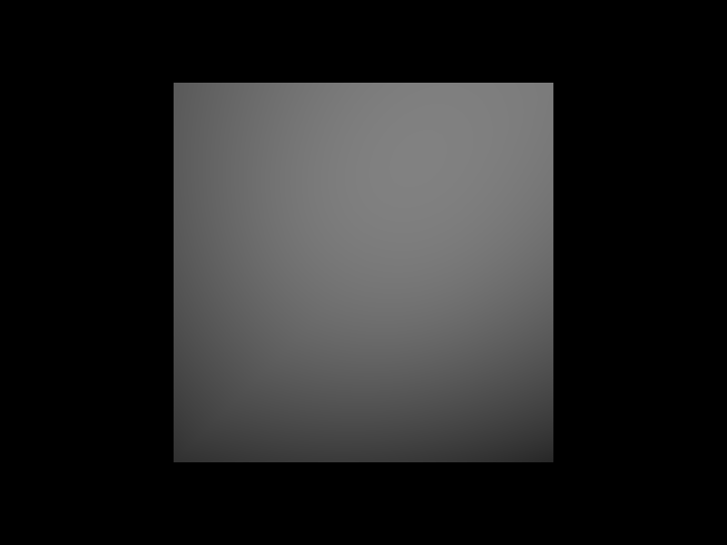 |
My BVH construction algorithm follows a recursive top-down approach. For a given set of primitives, I first compute their collective bounding box by expanding a BBox object to encompass each primitive's individual bounding box.
If the number of primitives is less than or equal to max_leaf_size, the current node is designated as a leaf node. I store the start and end iterators for the primitives and terminate the recursion for this branch.
For interior nodes, I implement a splitting heuristic based on the longest axis and the average of centroids:
std::partition to reorder the primitives in the vector such that those with centroids less than the split point move to the "left" and the rest to the "right".
The left and right children of the node are then created by recursively calling construct_bvh on the two resulting partitions.
With BVH acceleration implemented, we can now render complex geometries with hundreds of thousands of triangles in just a few seconds. Below are several large models rendered with normal shading.
|
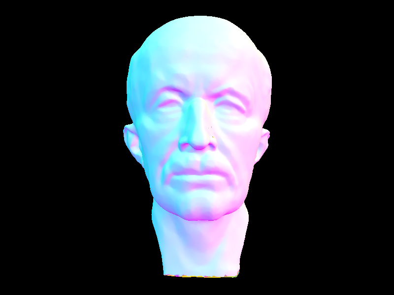 |
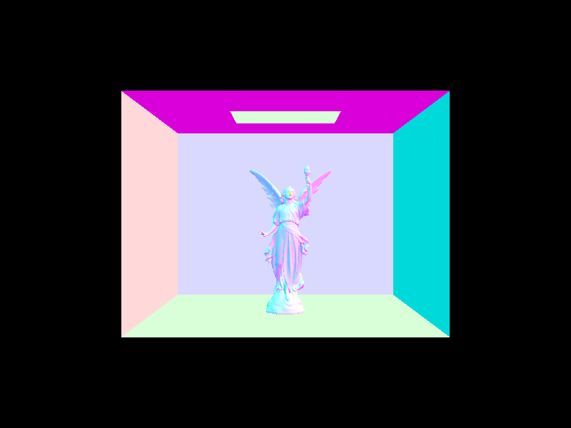 |
The impact of BVH acceleration on rendering performance is transformative. Below is a comparison of rendering times (using normal shading, 8 threads, and an 800x600 resolution) for scenes with varying levels of complexity.
| Scene | Primitive Count | Without BVH (Part 1) | With BVH (Part 2) |
|---|---|---|---|
| maxplanck.dae | 50,801 | ~350s (est.) | 0.62s |
| CBlucy.dae | 133,796 | Too long | 1.45s |
As demonstrated in the table, BVH acceleration reduces rendering time from linear complexity \(O(n)\) to logarithmic complexity \(O(\log n)\). For the cow.dae scene, the render time dropped from over 40 seconds to less than 0.2 seconds—a speedup of over 200x. For highly complex scenes like CBlucy.dae, rendering without BVH is practically impossible, whereas with BVH, it finishes in under two seconds. This exponential speedup is due to the BVH traversal's ability to prune large sections of the scene that the ray is guaranteed not to intersect.
In this part, I implemented two distinct methods for estimating direct illumination: Uniform Hemisphere Sampling and Importance Sampling (Light Sampling).
For each hit point, I generate num_samples rays in directions sampled uniformly from a hemisphere centered at the surface normal. The process involves:
hemisphereSampler.Rather than sampling the entire hemisphere, this method samples all light sources in the scene directly. For each light:
light->sample_L.ns_area_light samples.Below is a comparison of the same scene (CBbunny.dae) rendered with 64 samples per pixel and 32 light rays.
|
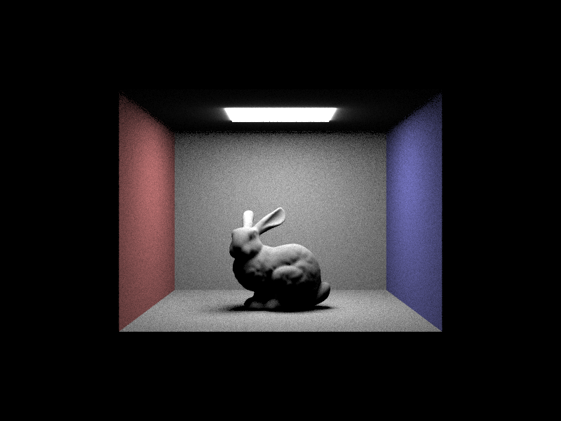 |
|
To demonstrate how the number of light rays affects shadow quality, I rendered CBbunny.dae with 1 sample per pixel (-s 1) and varying numbers of light rays (-l).
|
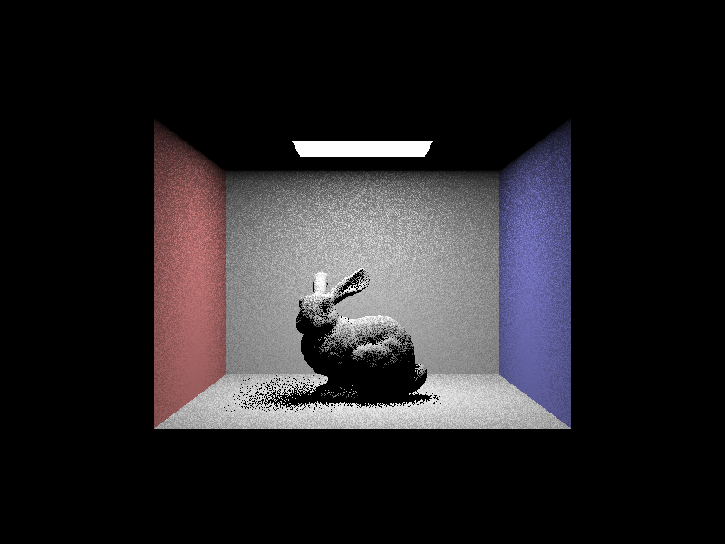 |
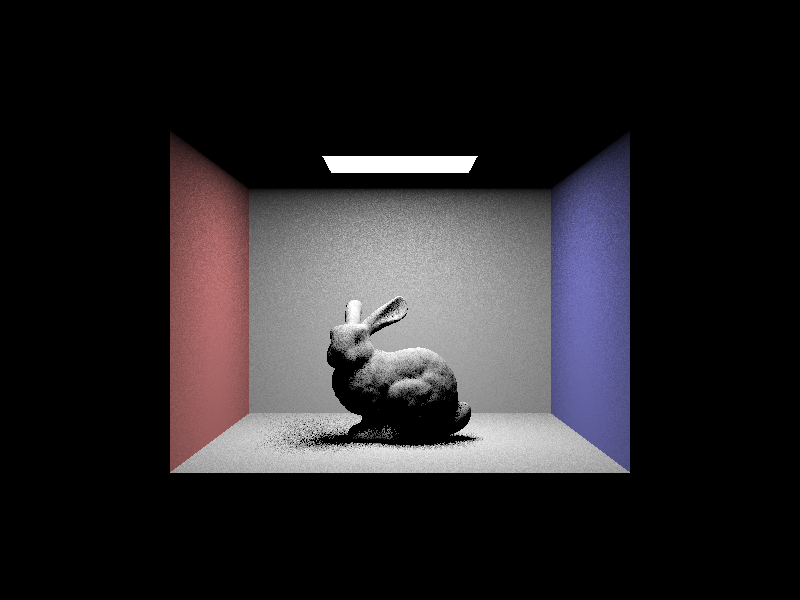 |
|
|
|
Importance sampling is vastly superior to uniform hemisphere sampling in terms of efficiency and noise reduction. In uniform hemisphere sampling, many rays are wasted because they are cast in directions that do not hit a light source, especially when the light source is small. This results in significant "salt-and-pepper" noise. Importance sampling solves this by only casting rays toward known light sources, ensuring every ray (that isn't occluded) contributes to the final pixel color. Furthermore, importance sampling allows for the rendering of point light sources, which are impossible to hit with random hemisphere rays.
To achieve global illumination, I implemented a recursive path tracing algorithm in at_least_one_bounce_radiance. The core idea is to estimate the radiance reflected from a surface by recursively sampling the incoming light from other surfaces in the scene.
sample_f function, which uses cosine-weighted hemisphere sampling for diffuse materials.at_least_one_bounce_radiance to get the radiance from that point.Below are scenes rendered with full global illumination (direct + indirect) at 1024 samples per pixel.
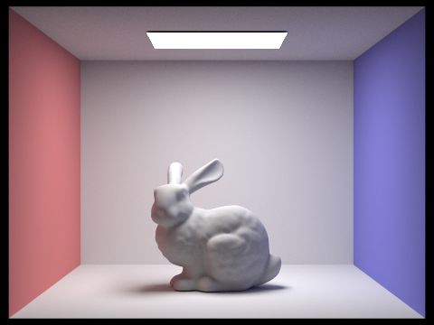 |
Comparison of direct-only vs. indirect-only lighting for CBbunny.dae at 1024 spp. Indirect lighting reveals the "color bleeding" from the red and green walls onto the bunny and the floor.
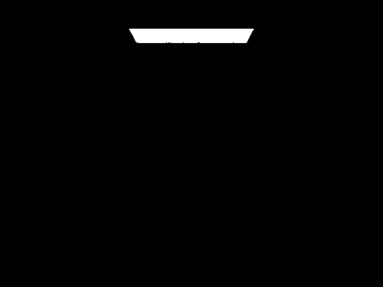 |
Renders showing only the \(m\)-th bounce of light. The 2nd and 3rd bounces contribute subtle "fill" light and color bleeding, significantly improving the realism over basic rasterization by illuminating areas that receive no direct light.
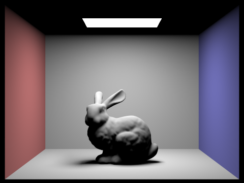 |
Comparison of accumulated rays (summing all bounces up to depth \(m\)) for CBbunny.dae.
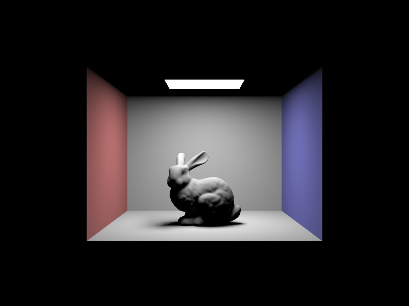 |
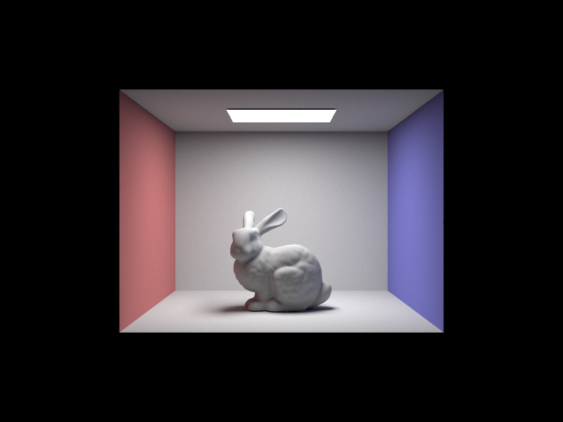 |
|
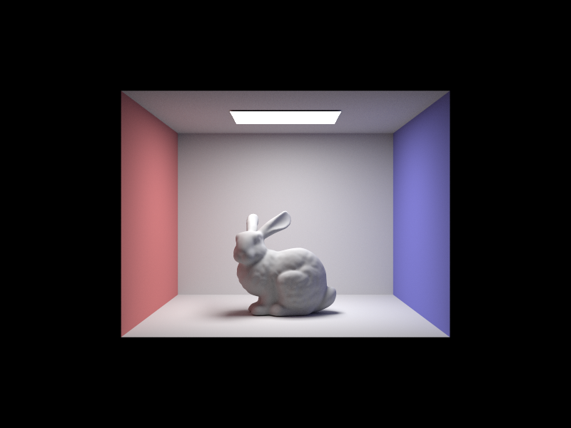 |
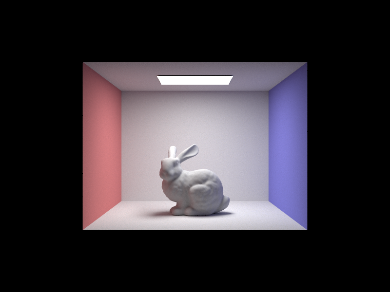 |
Comparison of noise levels with different sampling rates (1, 2, 4, 8, 16, 64, 1024 spp) with 4 light rays.
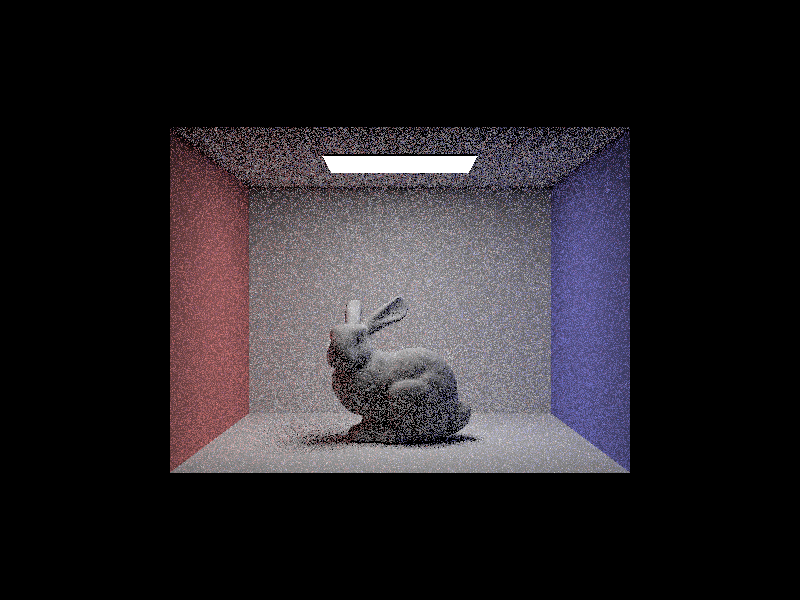 |
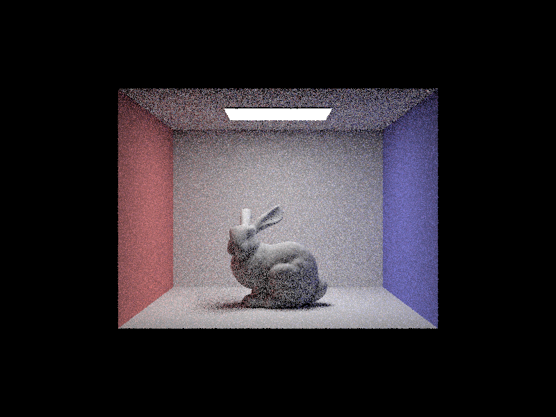 |
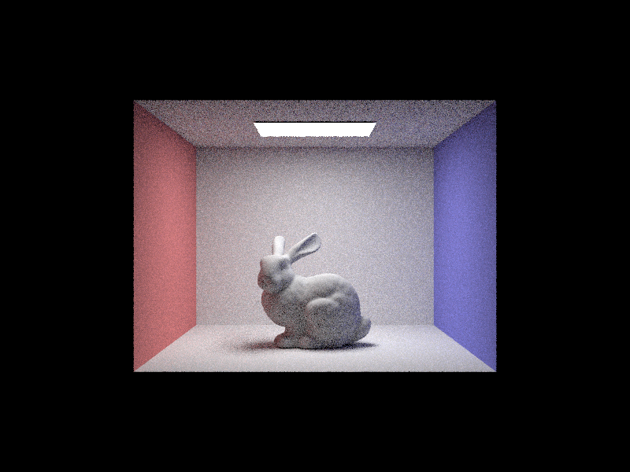 |
|
Monte Carlo path tracing typically requires a high number of samples per pixel to eliminate noise, but not all pixels converge at the same rate. Adaptive sampling optimizes this process by statistically detecting pixel convergence and terminating sampling early for pixels that have already reached a stable value.
My implementation in raytrace_pixel tracks the statistics of the samples as they are generated. For each pixel, I maintain two accumulators for the illuminance \(x_k\) of the samples:
Every samplesPerBatch (default 64), I calculate the mean \(\mu\) and variance \(\sigma^2\) of the samples collected so far:
\[ \mu = \frac{s_1}{n}, \quad \sigma^2 = \frac{1}{n-1} \left( s_2 - \frac{s_1^2}{n} \right) \]
Then, I compute the confidence interval measure \(I\) at a 95% confidence level:
\[ I = 1.96 \cdot \frac{\sigma}{\sqrt{n}} \]
If \(I \le \text{maxTolerance} \cdot \mu\) (with a default tolerance of 0.05), I assume the pixel has converged and stop tracing further rays. Finally, I record the actual number of samples used in the sampleCountBuffer to generate the sampling rate visualization.
Below are the results for CBbunny.dae and CBspheres_lambertian.dae rendered with a maximum of 2048 samples per pixel, 1 sample per light, and a max ray depth of 5.
|
|
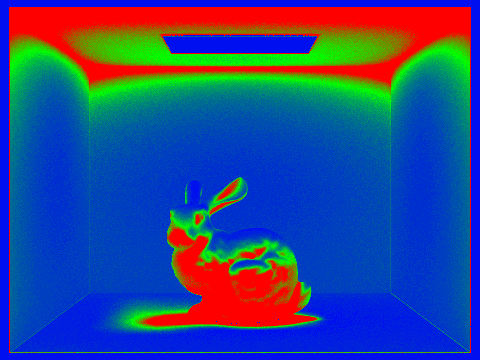 |
|
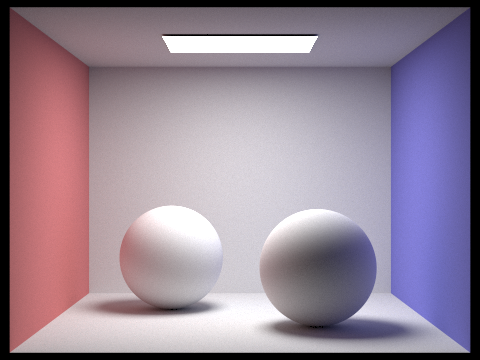 |
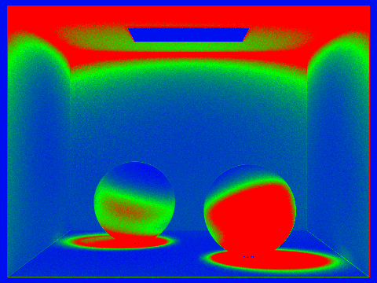 |
In the sample rate maps above, blue regions indicate pixels that converged quickly (low sampling rate), while red regions indicate complex areas—such as shadow boundaries and indirect lighting reflections—that required more samples to converge.